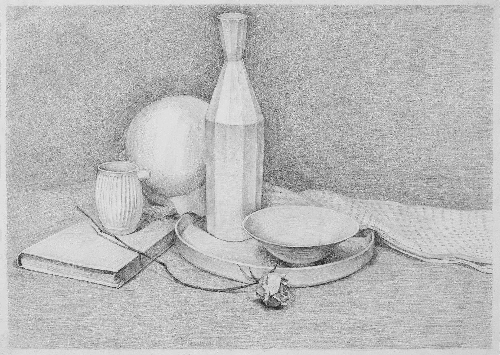

Self-portrait

I always listen to music while painting, sometimes loud rock that makes me feel happy and energetic and sometimes quiet classical that makes me feel relaxed. This has inspired me to explore music as a second way, beyond my visual art, to express myself powerfully to an audience by creating art that can help people engage positively with each other. I have wanted to create an instrument that is visually welcoming and encourages creativity for a long time. When I watch a musician playing the guitar, I often find that the curve of the guitar fits his body well, which creates a positive relationship between the musician and the instrument, making the performance sound more joyful. I enjoy looking at the curves of guitars, the connections between each component part, and the contrast of different materials, such as wood and metal. Therefore, in one of my portfolio pieces, I depicted five detailed snapshots of different parts of a guitar. While I was drawing them, the comfortable curves of the guitar connected together and went deep into my mind. I decided to make an instrument of my own, so I thought about the social context surrounding instruments, performance, and music. In modern society, individualism is praised. For example, parents encourage their children to practice music for many hours by themselves, which deprives them of time spent with their peers. I wanted to reverse these isolating trends and challenge individualism’s social dominance. I drew various comfortable curves in my sketchbook, connected them together to form different shapes, and refined them into a welcoming ergonomic instrument which allows five people to sit in a circle to play while facing each other. With this cooperative instrument, everyone can make an original and unique sound, and together they can create multi-layered music while practicing teamwork and working together harmoniously as a community. In addition to being cooperative, I wanted my instrument to provide a new way for people to create innovative music. There are no standards and expectations for my never-before-seen instrument, so any pleasing sound produced will be encouraging. People won’t be afraid of being criticized when they play, so amateur players will feel confident to bring their creativity and untaught freshness to the music. Everyone is a novice at playing this instrument, so learning to play together will be a group experimental process. I'm looking forward to producing music that can make people more sensitive to sounds and each other to bring more human wisdom into the world. Now that I have created a playable prototype, I am happy with the result. When my friends and I played it for the first time, we faced each other, playing a harmonious and interesting melody, and enjoying a happy atmosphere. We all had different interpretations of the sounds, and we worked together to create a song that combined our individual contributions.
Single-instrument Quintet


I always listen to music while painting, sometimes loud rock that makes me feel happy
and energetic and
sometimes quiet classical that makes me feel relaxed. This has inspired me to explore music as a second way,
beyond my visual art, to express myself powerfully to an audience by creating art that can help people engage
positively with each other. I have wanted to create an instrument that is visually welcoming and encourages
creativity for a long time.
When I watch a musician playing the guitar, I often find that the curve of the guitar
fits his body well, which
creates a positive relationship between the musician and the instrument, making the performance sound more
joyful. I enjoy looking at the curves of guitars, the connections between each component part, and the
contrast
of different materials, such as wood and metal. Therefore, in one of my portfolio pieces, I depicted five
detailed snapshots of different parts of a guitar. While I was drawing them, the comfortable curves of the
guitar connected together and went deep into my mind.
I decided to make an instrument of my own, so I thought about the social context
surrounding instruments,
performance, and music. In modern society, individualism is praised. For example, parents encourage their
children to practice music for many hours by themselves, which deprives them of time spent with their peers. I
wanted to reverse these isolating trends and challenge individualism’s social dominance.
I drew various comfortable curves in my sketchbook, connected them together to form
different shapes, and
refined them into a welcoming ergonomic instrument which allows five people to sit in a circle to play while
facing each other. With this cooperative instrument, everyone can make an original and unique sound, and
together they can create multi-layered music while practicing teamwork and working together harmoniously as a
community.
In addition to being cooperative, I wanted my instrument to provide a new way for
people
to create innovative
music. There are no standards and expectations for my never-before-seen instrument, so any pleasing sound
produced will be encouraging. People won’t be afraid of being criticized when they play, so amateur players
will
feel confident to bring their creativity and untaught freshness to the music. Everyone is a novice at playing
this instrument, so learning to play together will be a group experimental process. I'm looking forward to
producing music that can make people more sensitive to sounds and each other to bring more human wisdom into
the
world.
Now that I have created a playable prototype, I am happy with the result. When my
friends and I played it for
the first time, we faced each other, playing a harmonious and interesting melody, and enjoying a happy
atmosphere. We all had different interpretations of the sounds, and we worked together to create a song that
combined our individual contributions.
Eyesight Hidden in Beijing

This summer vacation, I enjoyed strolling around my local Hutong, one of the
neighborhoods of narrow alleyways
particular to Beijing. I felt as if the city was talking to me through the graffiti and stickers from
underground organizations pasted on the walls of the Hutong as well as the government banners promoting
socialist core values. I began to do research into the underground organizations behind the graffiti, the
relationship between different levels of discourse, such as top-down propaganda vs grass-roots art, and how
space can interact with different forms of information.
Next, I designed my own graffiti tag, called Eyesight, which I painted and pasted
around
the city. When I am not
in Beijing, it helps me watch my home, eagerly looking at passers-by and conveying messages to them. Maybe in
the future, more people will notice these traces and pay more attention to the city and its power dynamics and
learn to find interesting views in the street.
Do You Know What You're Laughing At?

People have the right to choose entertainment, but I have noticed that television and
social media have
influenced people around me to perceive the world through short videos and articles that summarize the latest
news, which has made them lose the patience to read serious articles or books.
In this project, I created a dystopian brand, Nirvana, to sell objects that can be
burned to quickly offer
thoughtless happiness. I shaped the candles like objects that represent human mindfulness that are used to
learn, record, think, and reflect in order to highlight a contrast with the urgent emotions and trend of rapid
destruction symbolized by burning them.
I used exaggerated promotional language so that people would want to use these items
quickly without having to
think deeply. If these five objects are burned, instead of being used for their thoughtful purposes, it means
that we are happy to become creatures who don't know why we laugh and don't reflect on ourselves anymore.
Trash Funeral
When I found that I and the people around me had wasteful habits, I asked myself, “Why
do we throw away things
that haven't been used up yet?” In the search for answers, I identified five objects which my family members
felt were no longer valuable that I wanted to keep. I made a memorial for them by writing a biography of each
item’s short, sad life journey and hand-making coffins to place each item in. I felt deeply sorry for them
when
I looked at them lying alone in the coffins.
To show how people’s perception of products’ value is easily manipulated by
consumerism,
I used three prices to
quantify the value of each item: the price people paid for it when they saw a new thing to buy, the price
people
gave it when they didn’t need it anymore, and the new price it could be sold for when people viewed the
memorial. I found we easily lose desire for our possessions because we are reluctant to spend time and energy
on
maintaining old things when we are attracted by new products.
Owner Controlled Horse Mask

Once upon a time, a mad scientist designed a mask to tame a pony. Each function of the
mask symbolizes one type
of power to control society and engineer soulless repression.
Horns: Symbolizes formalism that focuses on appearances and only cares superficially
about practical problems
External Noise Silencer and Internal Noise Maker: Symbolizes how educators are used to
suppress individualvoices and teach conclusions instead of letting individuals think freely
Calming Herbal Aroma Maker: Symbolizes how power suppresses freedom of public opinion
in
order to create fake
stability
Voice Changer: Symbolizes how power is trying to maintain absolute control over
citizens’ freedom of speech so
that even dissent can only be expressed in official language
Dual vision control glasses: Symbolizes how power tries to display moral ideas
constantly in front of people’s
tired eyes to plant them into their brains
I hope all the ponies in the world will grow up without fear of control and power.
Memories
I drew a pamphlet of scenes recording my memories of times I spent with my friends.
For
example, I drew the
memories of riding the highest roller coaster at the Halloween Haunt with my classmates last year, chatting
with
my friends about our hometowns on the way there, and making new friends while listening to music.
In order to give the pamphlet a lively feeling, I chose Riso printing, which is a
method
of stencil printing
that allowed me to use pure, bright fluorescent colors. Since the computer couldn’t accurately display what
the
Riso ink was going to look like once it was printed, I used the color card as a reference to visualize the
effect I wanted. Also, when using Riso printing, the alignment of the board is slightly different every time,
so
every page printed is a unique and beautiful accident, just like my favorite memories. Once it was printed and
bound, I sent copies of the pamphlet to my friends so they can share the memories.
Traveling Cabinet

Once, I found a very old cabinet in the storage room of my grandmother's house. When I
opened the cabinet, there
was a smell of a cedar forest. It seemed that there was a deep darkness calling me to travel to a new space. I
believe that this is a door to a different parallel universe containing various natural spaces. I decided to
share its mysterious calling with more people.
When you open the biggest door of the cabinet, you are led to a deadly space full of
poisonous thorns. I used
two contrasting colors and a sharp composition to create this atmosphere. Then, when you open the first drawer
on the left, you travel to a quiet lake. Be very careful when you open the drawer to the right because it's a
cave full of bats. Finally, when you open the bottom drawer, you end the adventure and enter a sparkling ocean
lit by a warm sunset.
Fish Recipe
Homemade braised fish is one of my favorite dishes. One day, when I looked at the dark
sauce and fish on my
plate, I wondered how it was made. I discovered that the ingredients for this dish are Texture, Shape, Space,
and Color. Because of the complexity of Chinese cooking techniques, there is a big difference between the
ingredients and the final appearance of a dish.
Texture: I cut the first ingredients from various angles and closely observed their
texture.
Shape: I placed the ingredients on a white background to study their positive and
negative shapes.
Space: I assembled the pieces of ingredients throughout a space to make them look like
they are performing a
story.
Color: I used abstract shapes to express the color combinations of these natural
ingredients.
Instead of looking at the dish from a chef or food critic’s perspective, I used an
image
study to create a new
recipe examining the ingredients in a new order and from a new perspective.
2020 Foundation Drawings
Space and Folds
To set up the scene, I found two kinds of cloth: one is a very soft interlining cloth, and the other is a flat, white canvas. I folded the soft interlining into many subtle folds and laid it under the canvas. When I look out the window of an airplane, huge mountains and valleys look like small folds. When I depicted the folds in the cloth, I visualized them as gullies and mountains. The negative space of the white canvas, set off by the dark interlining, seems to form a doorway. It is a canvas painted on a canvas, so it seems likely to connect to a parallel universe.
White on White 2
In my daily sketching practice, I find it interesting to portray different materials in a scene. To develop this interest further and experiment with different ways to express warmth, material, shape, and space, I chose a scene of all white objects. I carefully observed details, saw subtle differences, and let these differences and similarities build a relationship.
Five Snapshots of A Guitar

I enjoy looking at the curves of guitars, the connection between each component part, and the contrast of different materials, such as wood and metal. In this painting, I depict five detailed snapshots of a guitar. Together, these close views of the guitar deconstruct it, and the positive and negative relations in the five pictures recombine the space of the guitar. Zooming in on each section forces the viewer to look at the details of the guitar carefully, offering them puzzle pieces that can be used to reconstruct it.

Single-instrument Quintet

Do You Know What You're Laughing At?
Trash Funeral

Traveling Cabinet
Fish Recipe

Eyesight Hidden in Beijing
Owner Controlled Horse Mask